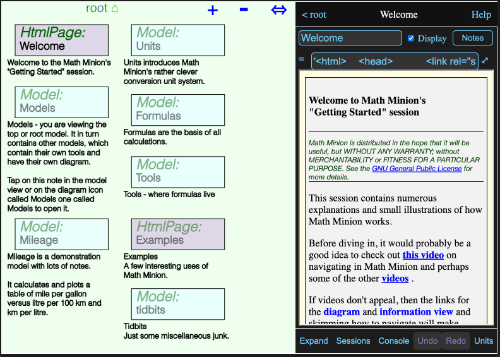
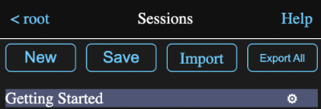

Overview
This tutorial will just touch on the basics of Math Minion, while the Getting Started session and the help pages are the primary resources.
Links to help pages will be used liberally in the following.
Getting Started
When you access Math Minion for the first time or on a new server, in a new browser or the first time running the Mac app, the Getting Started session will be loaded.
It is is a heavily commented guide as well as a demonstration of Math Minion's features and tools. It and the help pages are the primary documentation resources for Math Minion and it is well worth checking out when you are done here.
Windows
If your browser window is wide enough. you will see something like this when Math Minion starts:
On the left is a diagram showing the various tools contained in the root model. A model is simply a collection of tools, possibly including other models.
On the right is an information view about the currently selected tool, or if no tool is selected, as is this case here, about the model itself. The information view for a model can show results for tools it contains and in this case the Html Page named Welcome is displayed.
On a narrow device, like a phone, you probably will just see the information view, but on the bottom button bar there will be an Diagram button that will switch to the diagram view.

This will have a corresponding Info button that will switch back.

With the split view, which should appear even on a phone if you rotate the device to the horizontal, the button bar will look like:

Tapping the Expand button will expand the info view to take up the entire window and the Diagram button will appear again.
Start a New Session
On the button bar discussed above. tap the Sessions button to bring up a view of the saved sessions. If you haven't run Math Minion before, Getting Started will be the only one.
Tap the New button to start a new session.
Tap anywhere on the diagram and then on the Add Expression line. A new expression icon will appear on the diagram and the information view will show the expression.
Expressions
The Expression information view should look something like this.
All an expression tool does is evaluate a single formula, but it is almost always the most commonly used tool.
The name field and name have already been selected, so just type BMI and hit return. Yes, I know all the controvery about Body Mass Index, but it is a nice short, well known formula to play with. Namely:
BMI = weight/height^2
where weight is in kilograms and height is in metres.
Enter the formula:
80 kg / (6 ft + 1 in)^2
and hit return.
The mixed conversion units have been dealt with and an answer returned in the SI units BMIs are reported in.
Let's do this a bit differently. Tap the +Exp button beside the Display Input check box. This will create another empty expression. Name it Weight, enter the formula 80 kg and check the Display and Display Input check boxes. It should look like this:
Tap the +Exp to create a third expression and name it Height. Enter the formula 6 ft + 1 in and again check the Display and Display Input check boxes. It should look like this:
and the diagram will now look like this:
Formula Editor
Let's return to the original BMI expression and revise the formula to use the new Weight and Height expressions and take a tour of the formula editor.
Tap on the BMI icon on the diagram to return to that expression and check the display checkbox, since I appear to have done so before taking these screen shots. 😊
Then tap on the expand ⤢ icon to the right of the formula. This will bring up the formula editor. (Note you can also hit the return key while holding down shift in the formula field.)
While it is convenient to enter simple values and formulas right in a formula field, the formula editor offers a number of tools to make composing a formula easier. We are going to completely replace our existing formula, so select everything inside the text area and delete it:
The area in the bottom part of the screen shows various previews, depending on where the cursor is in a formula and whether a preview button has been pressed. Note that you can adjust the relative sizes of the formula input and preview areas by dragging on the up/down icon ↕ to the right of the Apply button.
In this case the cursor is in a position where you are most likely to want to enter a value or a tool name, so the preview area lists the tools currently in the model. If you enter an w, the list will be filtered, in this case down to just weight.
As long a you have entered at least one character, hitting the tab key will insert the top entry in the list, here Weight, into the formula. You can also just tap on any entry to insert it. Go ahead and do that and then enter a slash, followed by a 1 and a space, so it looks like this:
The cursor is preceeded by a number and a space, which suggests you may want to enter a conversion unit for the number, so all defined conversions units are displayed in the scrollable preview area. Type an o (oh) character and the list will be filtered to just these:
Rather than picking one, backspace over the o and tap on the Units button ABOVE the formula. This will show the unit browser, which lets you browse through units by type.
On the left hand side will be a list of unit types. Scroll down to Mass and tap on it.
Now the right hand side lists all the defined mass units. Tap on lb and hit the apply button.
The lb unit has been inserted at the cursor position
Okay, erase the 1 lb and type a open curly brace {.
Math Minion function calls consist of a open curly brace immediately followed by the function name and then a comma separated list of arguments, if any, any finally a closing curly brace.
Since we have entered an opening brace, the preview area has been filled with a list of all the available functions. Like the other previews, it will be filtered as we type characters.
We are just playing around here, so just enter a tab to insert the {abs x} function.
After inserting the function, the cursor is positioned before the first argument. If we enter a question mark at this position, we get:

which shows a brief description of the function in the preview area.
Erase the inserted function and tap the Functions button above the formula area.
There isn't much I can add to the instructions at the top of the view. Browse through the functions if you wish and then just hit cancel to return to the formula editor.
Let's finally complete the formula to calculate BMI again by adding height^2 after the divide sign.
With the cursor at the end of the line and no space after the 2, Math Minion has nothing to suggest as a completion, so it reverts to showing the Current value for the expression, that is the value calculated from the original formula before any editing.
Click on the preview button and you will get this:
This now shows the result of calculating the edited formula. As hoped the value is the same as the previous formula and the only difference in the display is the Current = label has changed to Preview =.
Try selecting just the word height and tap the preview button again.
With height selected, the preview, now labeled Selection =, shows the value of evaluating just the selected text. This is really handy if your formula isn't giving you what you want or has an error.
Model View
If you now tap on the < root button at the top left of the information view, you will return to viewing the root model, which now looks like this:
Those display boxes we were checking told the model to display the input field and calculated result for both the Weight and Height expressions and just the calculated result for BMI. Try tapping in the input field for weight and change it to 81 kg.
The new BMI is shown immediately and demonstrates that the model view is now a convenient little form.
The diagram now looks like this:
The lines running from the corners of the Weight and Height icons to the middle of a vertical side of the BMI icon indicate that the BMI tool uses the values of Weight and Height. It is kind of trivial in such a simple example, but quite useful when lots of tools are involve in a model.
Drag the BMI icon over to the right so the diagram looks something like this:
Notice that the fields in the information view have been rearranged to have the BMI at the bottom. The fields in a model information view are arranged according to the position of the tool icons on the diagram, with left most ones first and any ties being resolved in favour of the top most ones.
Looking at this, it probably isn't necessary to show the calculated results of the Weight and Height icons. Tap on either the Weight icon or one of the Weight labels in the information view to show that expression again. Uncheck the Display Input box and then do the same for the Height.
Return to the model information view (tap < root) and it should now look like this:
Tapping on that little printer icon in the upper right of a model or html page tool would bring up a print dialog that would let you print the contents of the information view or save it as a PDF.
Diagram
A few quick notes about the diagram:
- You can drag the background around to pan the whole diagram.
- You can drag icons to rearrange them.
- You can zoom the diagram in and out by, depending on your device:
- Tapping on the + and - buttons at the top right.
- Scrolling with your mouse wheel or track pad
- Using a pinch gesture on the screen or trackpad
- Tapping on the background will bring up a context menu.
- Tapping on an icon will show its information view or if the view is already showing, it will dismiss it.
- Tapping and holding on an icon for a couple of seconds before releasing will produce a tool menu.
- Tapping and holding on the diagram background for a couple of seconds before releasing will produce a selection box with the upper left at the tap point. It can be resized by dragging the upper left or lower right corners. Any icons partially inside the box will be selected.
- Tapping inside a selection box will produce a selection menu.
Saving Sessions
Math Minion continously saves your work in a browser database so that even if you exit Math Minion without even naming your session, it will still be there when you come back.
However if you are working on an unnamed session and want to create or load another session, you have to go to the session view (using the Session button at the bottom of the information view) and tap the Save button. You will be asked for a name and afterwards can return to the saved session by tapping on its name in the session view.
Once the session is named, there is no need to use the Save button to save changes you may make to it. They will be automatically saved.
However it is a good idea to export your sessions to device or cloud files fairly often. There is an Export All button on the session view that will export your entire collection of sessions to a single file that can be imported if necessary or if you wish to have the sessions in another browser or device.
NOTE: As part of Apple's antitracking efforts, all Safari browsers and all browsers on iOS and iPadOS automatically delete the entire database if you don't visit the site for seven days. While protection from tracking is nice, it is unfortunate that there is no way I know of that a user can tell it not to do this for a specific site.
Other browsers on PCs, and I imagine Android, do not do this, although exporting your stuff frequently is probably still a good idea.
Conclusion
That is it for this very basic introduction. It barely touched on the things Math Minion can do, so you might want to go back to the Getting Started session and browse through its examples and descriptions as well as other help pages.
If you get stuck or have and questions or comments, please don't hesitate to contact me.